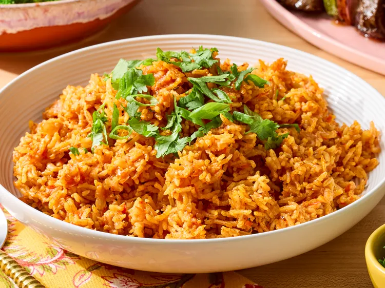

Home
Jollof Rice

Description
This is a recipe to Jollof Rice a dish native to West Africa. Commonly
popular in Ghana and Nigeria
Ingredients
Tomato Sauce
- 1 large, ripe tomato, cored and quartered
- 1 large red bell pepper, seeded and roughly chopped
- 1 whole habanero pepper, stem removed
- 1 whole Fresno chili or jalapeño, stem removed
- 4 cloves garlic, peeled
- 1 tablespoon minced ginger
- 2 cups water
Rice
- 1/3 cup olive oil
- 1 red onion, diced
- 1 teaspoon salt, plus more to taste
- 1/4 cup tomato paste
- 2 tablespoons smoked paprika
- 1 teaspoon curry powder
- 1 teaspoon cumin
- 1 teaspoon dried thyme
- 1/2 teaspoon freshly ground black pepper
- 1/4 teaspoon turmeric
- 2 ¼ cups basmati rice
- 1 bay leaf
- 1 tablespoon chicken bouillon paste
- 1/4 cup chopped green onion, for garnish (Optional)
- 1/4 cup chopped cilantro, for garnish (Optional)
Steps
-
Make tomato sauce: Combine tomato, red bell pepper, habanero pepper,
Fresno chili, garlic, and ginger in a blender. Pour in water. Blend on
high until smooth and set aside.
-
Make rice: Heat olive oil in a large saucepan over medium heat. Add
onion and salt; sauté until onion starts to soften, 4 to 5 minutes.
Clear space in the middle of the pan; add tomato paste and sauté for 2
to 3 minutes. Season with paprika, curry powder, cumin, thyme, pepper,
and turmeric; cook, stirring occasionally, for 1 to 2 minutes.
-
Turn off heat and stir in rice, making sure every rice grain is coated
with oil-tomato mixture. Add bay leaf and chicken bouillon paste.
-
Turn heat to high, stir in tomato sauce, and bring to a vigorous simmer.
Cover with a tight-fitting lid, reduce heat to medium-low, and simmer
for 20 minutes; do not remove the lid or stir rice.
-
Turn off heat and set the timer for 12 minutes. Allow rice to sit and do
not remove the lid.
-
After the 12 minutes are up, remove the lid and fluff rice with a fork,
separating all of the grains. Serve garnished with green onion and
cilantro.